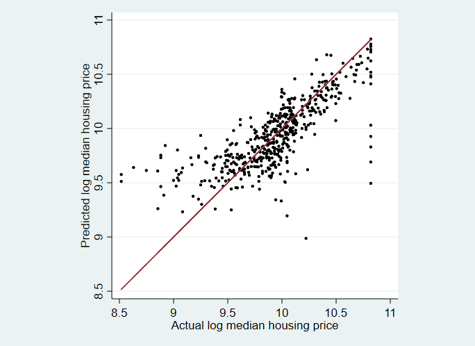
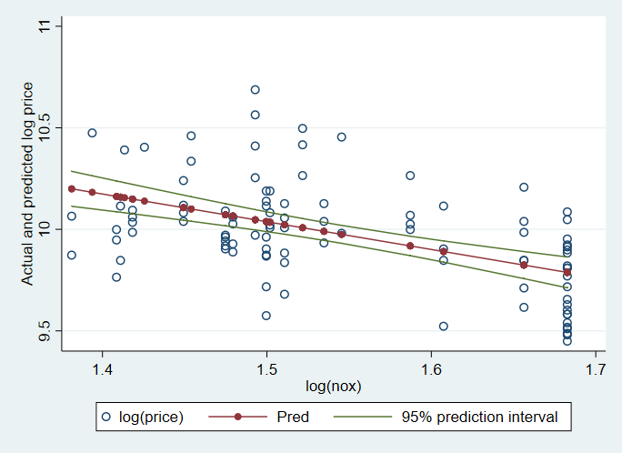

4 Linear Regression
4.1 Linear Regression
. use hprice2a.(Housing price data for Boston-area communities)
. summarize price lprice lnox ldist rooms stratio, sep(0)
Variable | Obs Mean Std. Dev. Min Max
-------------+---------------------------------------------------------
price | 506 22511.51 9208.856 5000 50001
lprice | 506 9.941057 .409255 8.517193 10.8198
lnox | 506 1.693091 .2014102 1.348073 2.164472
ldist | 506 1.188233 .539501 .1222176 2.495682
rooms | 506 6.284051 .7025938 3.56 8.78
stratio | 506 18.45929 2.16582 12.6 22
. use hprice2a.(Housing price data for Boston-area communities)
. regress lprice lnox ldist rooms stratio
Source | SS df MS Number of obs = 506
-------------+---------------------------------- F(4, 501) = 175.86
Model | 49.3987735 4 12.3496934 Prob > F = 0.0000
Residual | 35.1834974 501 .070226542 R-squared = 0.5840
-------------+---------------------------------- Adj R-squared = 0.5807
Total | 84.5822709 505 .167489645 Root MSE = .265
------------------------------------------------------------------------------
lprice | Coef. Std. Err. t P>|t| [95% Conf. Interval]
-------------+----------------------------------------------------------------
lnox | -.95354 .1167418 -8.17 0.000 -1.182904 -.7241762
ldist | -.1343401 .0431032 -3.12 0.002 -.2190255 -.0496548
rooms | .2545271 .0185303 13.74 0.000 .2181203 .2909338
stratio | -.0524512 .0058971 -8.89 0.000 -.0640373 -.0408651
_cons | 11.08387 .3181115 34.84 0.000 10.45887 11.70886
------------------------------------------------------------------------------4.2 Information Criteria
. use hprice2a.(Housing price data for Boston-area communities)
. quietly regress lprice lnox ldist rooms stratio
. estat ic
Akaike's information criterion and Bayesian information criterion
-----------------------------------------------------------------------------
Model | Obs ll(null) ll(model) df AIC BIC
-------------+---------------------------------------------------------------
. | 506 -265.4135 -43.49514 5 96.99028 118.123
-----------------------------------------------------------------------------
Note: N=Obs used in calculating BIC; see [R] BIC note.4.3 The Coefficient Estimates & Beta Coefficients
. use hprice2a.(Housing price data for Boston-area communities)
. quietly regress lprice lnox ldist rooms stratio
. regress, beta
Source | SS df MS Number of obs = 506
-------------+---------------------------------- F(4, 501) = 175.86
Model | 49.3987735 4 12.3496934 Prob > F = 0.0000
Residual | 35.1834974 501 .070226542 R-squared = 0.5840
-------------+---------------------------------- Adj R-squared = 0.5807
Total | 84.5822709 505 .167489645 Root MSE = .265
------------------------------------------------------------------------------
lprice | Coef. Std. Err. t P>|t| Beta
-------------+----------------------------------------------------------------
lnox | -.95354 .1167418 -8.17 0.000 -.4692738
ldist | -.1343401 .0431032 -3.12 0.002 -.1770941
rooms | .2545271 .0185303 13.74 0.000 .4369626
stratio | -.0524512 .0058971 -8.89 0.000 -.2775771
_cons | 11.08387 .3181115 34.84 0.000 .
------------------------------------------------------------------------------4.4 Recovering Estimation Results
. use hprice2a.(Housing price data for Boston-area communities)
. quietly regress lprice lnox ldist rooms stratio
. ereturn list
scalars:
e(N) = 506
e(df_m) = 4
e(df_r) = 501
e(F) = 175.8550695227946
e(r2) = .5840322442976398
e(rmse) = .2650029089298266
e(mss) = 49.39877352102587
e(rss) = 35.18349741237627
e(r2_a) = .5807111444517128
e(ll) = -43.4951392092929
e(ll_0) = -265.4134648194153
e(rank) = 5
macros:
e(cmdline) : "regress lprice lnox ldist rooms stratio"
e(title) : "Linear regression"
e(marginsok) : "XB default"
e(vce) : "ols"
e(depvar) : "lprice"
e(cmd) : "regress"
e(properties) : "b V"
e(predict) : "regres_p"
e(model) : "ols"
e(estat_cmd) : "regress_estat"
matrices:
e(b) : 1 x 5
e(V) : 5 x 5
functions:
e(sample)
. use hprice2a.(Housing price data for Boston-area communities)
. quietly regress lprice lnox ldist rooms stratio
. matrix list e(b)
e(b)[1,5]
lnox ldist rooms stratio _cons
y1 -.95354002 -.13434015 .25452706 -.05245119 11.083865
. use hprice2a.(Housing price data for Boston-area communities)
. quietly regress lprice lnox ldist rooms stratio
. estat vce
Covariance matrix of coefficients of regress model
e(V) | lnox ldist rooms stratio _cons
-------------+------------------------------------------------------------
lnox | .01362865
ldist | .00426247 .00185789
rooms | .00035279 .00003043 .00034337
stratio | 9.740e-07 .00002182 .00003374 .00003478
_cons | -.03037429 -.01001835 -.00341397 -.00088151 .10119496 4.5 Detecting Collinearlity in Regression
. use hprice2a.(Housing price data for Boston-area communities)
. quietly regress lprice lnox ldist rooms stratio
. estat vif
Variable | VIF 1/VIF
-------------+----------------------
lnox | 3.98 0.251533
ldist | 3.89 0.257162
rooms | 1.22 0.820417
stratio | 1.17 0.852488
-------------+----------------------
Mean VIF | 2.564.6 Presenting Regression Estimates
. use hprice2a.(Housing price data for Boston-area communities)
. generate rooms2 = rooms^2
.
. quietly regress lprice rooms
. estimates store model1
.
. quietly regress lprice rooms rooms2 ldist
. estimates store model2
.
. quietly regress lprice ldist stratio lnox
. estimates store model3
.
. quietly regress lprice lnox ldist rooms stratio
. estimates store model4
.
. estimates table model1 model2 model3 model4, stat(r2_a, rmse) b(%7.3g) se(%6.
> 3g) p(%4.3f)
------------------------------------------------------
Variable | model1 model2 model3 model4
-------------+----------------------------------------
rooms | .369 -.821 .255
| .0201 .183 .0185
| 0.000 0.000 0.000
rooms2 | .0889
| .014
| 0.000
ldist | .237 -.157 -.134
| .0255 .0505 .0431
| 0.000 0.002 0.002
stratio | -.0775 -.0525
| .0066 .0059
| 0.000 0.000
lnox | -1.22 -.954
| .135 .117
| 0.000 0.000
_cons | 7.62 11.3 13.6 11.1
| .127 .584 .304 .318
| 0.000 0.000 0.000 0.000
-------------+----------------------------------------
r2_a | .399 .5 .424 .581
rmse | .317 .289 .311 .265
------------------------------------------------------
legend: b/se/p
. use hprice2a.(Housing price data for Boston-area communities)
. generate rooms2 = rooms^2
.
. quietly regress lprice rooms
. estimates store model1
.
. quietly regress lprice rooms rooms2 ldist
. estimates store model2
.
. quietly regress lprice ldist stratio lnox
. estimates store model3
.
. quietly regress lprice lnox ldist rooms stratio
. estimates store model4
.
. estimates table model1 model2 model3 model4, stat(r2_a rmse ll) b(%7.3g) star
> title("Models of Median Housing Price")
Models of Median Housing Price
------------------------------------------------------------------
Variable | model1 model2 model3 model4
-------------+----------------------------------------------------
rooms | .369*** -.821*** .255***
rooms2 | .0889***
ldist | .237*** -.157** -.134**
stratio | -.0775*** -.0525***
lnox | -1.22*** -.954***
_cons | 7.62*** 11.3*** 13.6*** 11.1***
-------------+----------------------------------------------------
r2_a | .399 .5 .424 .581
rmse | .317 .289 .311 .265
ll | -136 -88.6 -124 -43.5
------------------------------------------------------------------
legend: * p<0.05; ** p<0.01; *** p<0.0014.7 Hypothesis Tests, Linear Restrictions, & Constrained Least Squares
4.7.1 Wald Tests with Test
. use hprice2a.(Housing price data for Boston-area communities)
. regress lprice lnox ldist rooms stratio
Source | SS df MS Number of obs = 506
-------------+---------------------------------- F(4, 501) = 175.86
Model | 49.3987735 4 12.3496934 Prob > F = 0.0000
Residual | 35.1834974 501 .070226542 R-squared = 0.5840
-------------+---------------------------------- Adj R-squared = 0.5807
Total | 84.5822709 505 .167489645 Root MSE = .265
------------------------------------------------------------------------------
lprice | Coef. Std. Err. t P>|t| [95% Conf. Interval]
-------------+----------------------------------------------------------------
lnox | -.95354 .1167418 -8.17 0.000 -1.182904 -.7241762
ldist | -.1343401 .0431032 -3.12 0.002 -.2190255 -.0496548
rooms | .2545271 .0185303 13.74 0.000 .2181203 .2909338
stratio | -.0524512 .0058971 -8.89 0.000 -.0640373 -.0408651
_cons | 11.08387 .3181115 34.84 0.000 10.45887 11.70886
------------------------------------------------------------------------------
. test rooms
( 1) rooms = 0
F( 1, 501) = 188.67
Prob > F = 0.0000
. use hprice2a.(Housing price data for Boston-area communities)
. quietly regress lprice lnox ldist rooms stratio
. test rooms = 0.33
( 1) rooms = .33
F( 1, 501) = 16.59
Prob > F = 0.00014.7.2 Wald Tests involving Linear Combinations of Parameters
. use hprice2a.(Housing price data for Boston-area communities)
. quietly regress lprice lnox ldist rooms stratio
. lincom rooms + ldist + stratio
( 1) ldist + rooms + stratio = 0
------------------------------------------------------------------------------
lprice | Coef. Std. Err. t P>|t| [95% Conf. Interval]
-------------+----------------------------------------------------------------
(1) | .0677357 .0490714 1.38 0.168 -.0286753 .1641468
------------------------------------------------------------------------------
. test ldist = stratio
( 1) ldist - stratio = 0
F( 1, 501) = 3.63
Prob > F = 0.0574
. test lnox = 10*stratio
( 1) lnox - 10*stratio = 0
F( 1, 501) = 10.77
Prob > F = 0.0011
. use hprice2a.(Housing price data for Boston-area communities)
. constraint def 1 rooms + ldist + stratio = 0
. cnsreg lprice lnox ldist rooms stratio, constraint(1)
Constrained linear regression Number of obs = 506
F( 3, 502) = 233.42
Prob > F = 0.0000
Root MSE = 0.2652
( 1) ldist + rooms + stratio = 0
------------------------------------------------------------------------------
lprice | Coef. Std. Err. t P>|t| [95% Conf. Interval]
-------------+----------------------------------------------------------------
lnox | -1.083392 .0691935 -15.66 0.000 -1.219337 -.9474478
ldist | -.1880712 .0185284 -10.15 0.000 -.2244739 -.1516684
rooms | .2430633 .01658 14.66 0.000 .2104886 .2756381
stratio | -.0549922 .0056075 -9.81 0.000 -.0660092 -.0439752
_cons | 11.48651 .1270377 90.42 0.000 11.23691 11.7361
------------------------------------------------------------------------------4.7.3 Joint Hypothesis Tests
. use hprice2a.(Housing price data for Boston-area communities)
. quietly regress lprice lnox ldist rooms stratio
. test lnox ldist
( 1) lnox = 0
( 2) ldist = 0
F( 2, 501) = 58.95
Prob > F = 0.0000
. use hprice2a.(Housing price data for Boston-area communities)
. quietly regress lprice lnox ldist rooms stratio
. test (lnox = 10*stratio) (ldist = stratio)
( 1) lnox - 10*stratio = 0
( 2) ldist - stratio = 0
F( 2, 501) = 5.94
Prob > F = 0.00284.7.4 Testing Nonlinear Restrictions & Forming Nonlinear Combinations
. use hprice2a.(Housing price data for Boston-area communities)
. quietly regress lprice lnox ldist rooms stratio
. testnl _b[lnox] * _b[stratio] = 0.06
(1) _b[lnox] * _b[stratio] = 0.06
chi2(1) = 1.44
Prob > chi2 = 0.2300
. use hprice2a.(Housing price data for Boston-area communities)
. quietly regress lprice lnox ldist rooms stratio
. testnl (_b[lnox] * _b[stratio] = 0.06) (_b[rooms] * _b[ldist] = 3 * _b[lnox])
>
(1) _b[lnox] * _b[stratio] = 0.06
(2) _b[rooms] * _b[ldist] = 3 * _b[lnox]
chi2(2) = 184.94
Prob > chi2 = 0.00004.7.5 Testing Competing (Non-Nested) Models
. use hprice2a.(Housing price data for Boston-area communities)
. nnest lprice lnox ldist rooms stratio (crime proptax ldist rooms stratio)
command nnest is unrecognized
r(199);
end of do-file
r(199);4.8 Computing Residuals & Predicted Values
. use hprice2a.(Housing price data for Boston-area communities)
. quietly regress lprice lnox ldist rooms stratio
. predict double lpricehat, xb
. label var lpricehat "Predicted log price"
. twoway (scatter lpricehat lprice, msize(small) mcolor(black) msize(tiny)) ||
> (line lprice lprice if lprice <., clwidth(thin)), ytitle("Predicted log media
> n housing price") xtitle("Actual log median housing price") aspectratio(1) le
> gend(off)

Actual versus predicted values from regression model
4.8.1 Computing Interval Predictions
. use hprice2a.(Housing price data for Boston-area communities)
. quietly regress lprice lnox if _n <= 100
. predict double xb if e(sample)
(option xb assumed; fitted values)
(406 missing values generated)
. predict double stdpred if e(sample), stdp
(406 missing values generated)
. scalar tval = invttail(e(df_r), 0.975)
. generate double uplim = xb + tval * stdpred
(406 missing values generated)
. generate double lowlim = xb - tval * stdpred
(406 missing values generated)
.
. summarize lnox if e(sample), meanonly
. generate lnoxbar = r(mean)
.
. label var xb "Pred"
. label var uplim "95% prediction interval"
. label var lowlim "95% prediction interval"
.
. twoway (scatter lprice lnox if e(sample), sort ms(Oh) xline(`lnoxbar')) (conn
> ected xb lnox if e(sample), sort msize(small)) (rline uplim lowlim lnox if e(
> sample), sort), ytitle(Actual and predicted log price) legend(cols(3))
.

Point and interval predictions from bivariate regression
4.9 Computing Marginal Effects
. use hprice2a.(Housing price data for Boston-area communities)
. regress price nox dist rooms stratio proptax
Source | SS df MS Number of obs = 506
-------------+---------------------------------- F(5, 500) = 165.85
Model | 2.6717e+10 5 5.3434e+09 Prob > F = 0.0000
Residual | 1.6109e+10 500 32217368.7 R-squared = 0.6239
-------------+---------------------------------- Adj R-squared = 0.6201
Total | 4.2826e+10 505 84803032 Root MSE = 5676
------------------------------------------------------------------------------
price | Coef. Std. Err. t P>|t| [95% Conf. Interval]
-------------+----------------------------------------------------------------
nox | -2570.162 407.371 -6.31 0.000 -3370.532 -1769.793
dist | -955.7175 190.7124 -5.01 0.000 -1330.414 -581.021
rooms | 6828.264 399.7034 17.08 0.000 6042.959 7613.569
stratio | -1127.534 140.7653 -8.01 0.000 -1404.099 -850.9699
proptax | -52.24272 22.53714 -2.32 0.021 -96.52188 -7.963555
_cons | 20440.08 5290.616 3.86 0.000 10045.5 30834.66
------------------------------------------------------------------------------
. mfx, eyex
Elasticities after regress
y = Fitted values (predict)
= 22511.51
------------------------------------------------------------------------------
variable | ey/ex Std. Err. z P>|z| [ 95% C.I. ] X
---------+--------------------------------------------------------------------
nox | -.6336244 .10068 -6.29 0.000 -.830954 -.436295 5.54978
dist | -.1611472 .03221 -5.00 0.000 -.224273 -.098022 3.79575
rooms | 1.906099 .1136 16.78 0.000 1.68344 2.12876 6.28405
stratio | -.9245706 .11589 -7.98 0.000 -1.15171 -.697429 18.4593
proptax | -.0947401 .04088 -2.32 0.020 -.174871 -.014609 40.8237
------------------------------------------------------------------------------